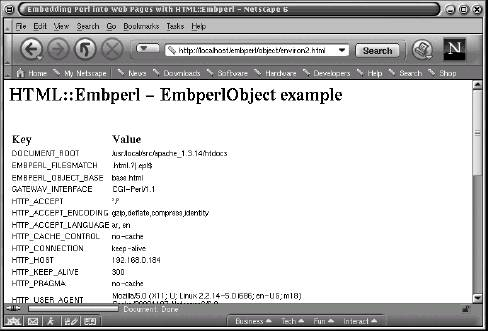

Mojolicious: Modern Perl Web Framework
Classic Perl scripting & automation

Perl Web Project
Ready to level up your Perl game? Check out these cool project ideas and real-world repos to see how Perl shines in web development, automation, and system scripting.